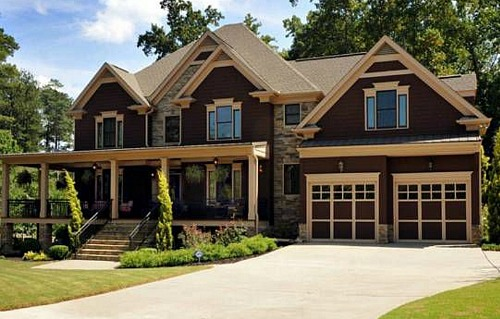

Real State & Apartments
-

346 Northlake Drive
Waterloo 4 beds, 3 baths
-

Medellin
It's the second largest city in Colombia
-

Cali
The world capital of salsa music and the sweet cane crops
-

Cartagena
A gorgeous fishing village on Colombia's Caribbean coast
-

The Coffee Region
It's famous for growing and production of a majority of the Colombian coffee
-

San Andres Island
It's a Colombian coral island in the Caribbean Sea
-

Amazon Region
The Amazon region has one of the most biodiverse ecosystems in the world